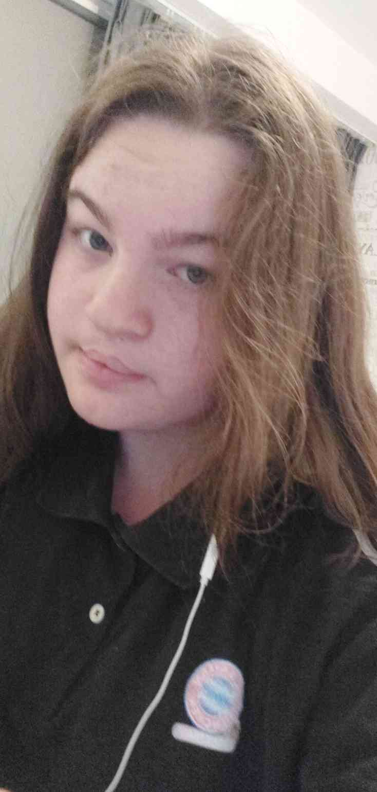

Ik ben Lisanne (van de Wege)
Verder vind ik het leuk om te werken aan projecten.
Ik studeer software development MBO 4 bij het davinci college in Gorinchem.
Dit heb ik gekozen omdat het me leuk leek om te coderen en ik de uitdaging uit wou gaan om mezelf socialer te maken en te durven presenteren.
Ook heb ik dit gekozen omdat er best wel wat meer vrouwelijke software developers mogen komen!